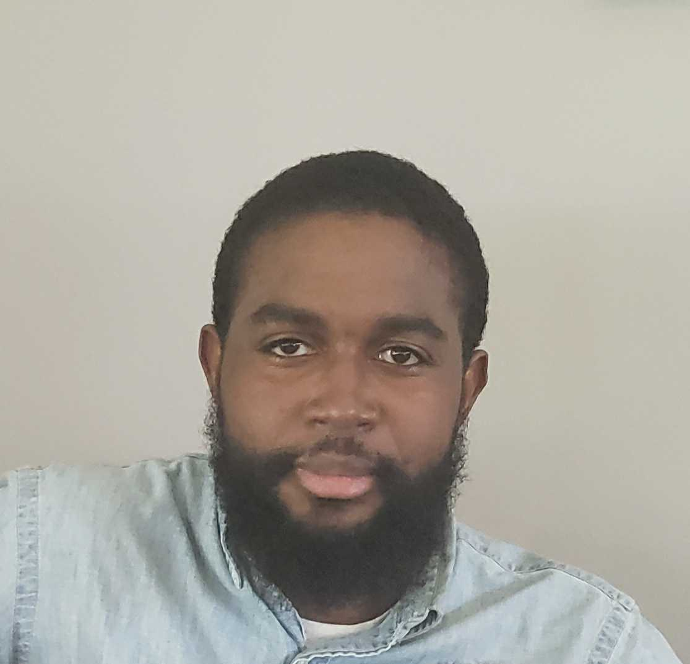

Professional Summary
Recent B.S. Computer Science graduate with 3+ years of IT support and
help desk experience. Proficient in troubleshooting hardware,
software, and networking issues, with strong skills in system
administration, Linux applications, and Cisco switches. Proven
ability to resolve complex technical challenges, improve operational
efficiency, and deliver excellent customer support.
Education
B.S. Computer Science | Regent University, August 2023
B.S. Electronics Engineering Technology | ECPI University, December 2018
Certifications
CompTia Security+
CompTia Server+
Professional Experience
IT Support Associate II | Amazon | August 2021 - Present
Resolved 15+ user requests per shift for hardware, software, and network issues using ServiceNow.
Installed and troubleshot Linux robotic applications via Ubuntu CLI, supporting 80 Robotic Induction Stations to maintain a rate of 525 packages/hour.
Replaced and installed Cisco 9200, 9300, and 9500 switches, ensuring network redundancy and smooth operations.
Managed UPS batteries for power outage preparedness, including firmware upgrades.
High Voltage Electrical Worker | NAVFAC | March 2018 - August 2021
Troubleshot voltage/current discrepancies for 480V shore power cables connected to shipboard units.
Repaired power cables, achieving savings of $300 per 50ft cable for the company.
Aircraft Worker | AECOM | June 2015 - March 2018
Conducted preventative and corrective maintenance for E2-C/D and C2 aircraft systems.
Performed pre- and post-operational inspections to ensure compliance with safety and code regulations.
Military Experience
Aviation Structural Mechanic | U.S. Navy | March 2011 - March 2015
Supervised and trained junior personnel in aircraft maintenance, tire repairs, and Navy operational procedures.
Maintained and repaired aircraft systems on USS Harry S. Truman, ensuring operational readiness.
Skills
Operating Systems: Windows 10/11, Linux (Ubuntu)
Networking: Cisco Switches, Network Maintenance, UPS Management
System Administration: Windows and Linux Server Management, User Account Administration
Programming/Web Development: SQL, HTML, JavaScript, C, C++, CSS
Tools: ServiceNow, Outlook, Slack
Leadership: Team Supervision, Volunteer Youth Basketball Coach
Contact
Hobbies
Copyright @ This information belongs to Randy Wiggins. All Rights. Reserved.